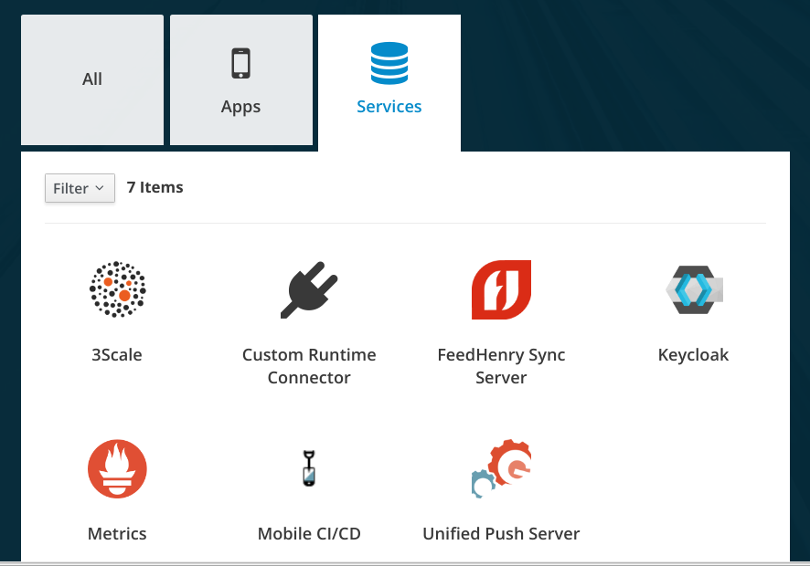
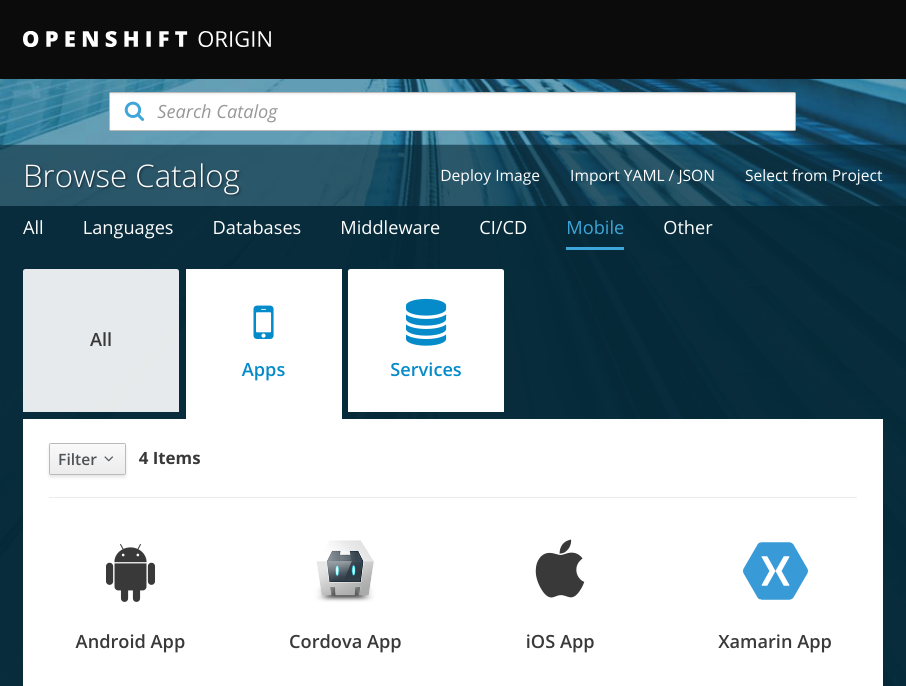

include::shared/attributes.adoc[]
Introduction to {ProductName}
{ProductName} is a suite of mobile services that run natively on OpenShift and are available from the OpenShift Service Catalog. The available mobile services are:

{ProductName} allows a user to easily integrate the mobile services into the following mobile platforms:

This section provides a brief overview of the foundational concepts that apply to {ProductName}.
Introduction To Security
Introduction To Security
Additional resources
-
For more information, see the Red Hat Single Sign-On.
include::shared/attributes.adoc[]
Introduction To Push Notification
The AeroGear UnifiedPush Server offers a unified Notification Service API to the above mentioned Push Network Services. When a push message request is sent to the UnifiedPush Server, it is internally translated into the format of these 3rd party networks. This gives a server the ability to send Push notifications to different mobile platforms.
Additional resources
-
A bulleted list of links to other material closely related to the contents of the concept module.
-
For more details on writing assemblies, see the Modular Documentation Reference Guide.
-
Use a consistent system for file names, IDs, and titles. For tips, see Anchor Names and File Names in Modular Documentation Reference Guide.
<div class="paragraph"> <p>include::shared/attributes.adoc[]</p> </div> <h1 id="con_introduction-to-data-sync_con_introduction-to-data-sync" class="sect0"><a class="anchor" href="#con_introduction-to-data-sync_con_introduction-to-data-sync"></a>Introduction To Data Sync</h1> <div class="paragraph"> <p>Introduction To Data Sync</p> </div> <div class="sect1"> <h2 id="con_introduction-to-data-sync_additional-resources-con_introduction-to-data-sync"><a class="anchor" href="#con_introduction-to-data-sync_additional-resources-con_introduction-to-data-sync"></a>Additional resources</h2> <div class="sectionbody"> <div class="ulist"> <ul> <li> <p>A bulleted list of links to other material closely related to the contents of the concept module.</p> </li> <li> <p>For more details on writing assemblies, see the <a href="https://github.com/redhat-documentation/modular-docs#modular-documentation-reference-guide">Modular Documentation Reference Guide</a>.</p> </li> <li> <p>Use a consistent system for file names, IDs, and titles. For tips, see <em>Anchor Names and File Names</em> in <a href="https://github.com/redhat-documentation/modular-docs#modular-documentation-reference-guide">Modular Documentation Reference Guide</a>.</p> </li> </ul> </div> </div> </div>
<div class="paragraph"> <p>include::shared/attributes.adoc[]</p> </div> <h1 id="con_introduction-to-metrics_con_introduction-to-metrics" class="sect0"><a class="anchor" href="#con_introduction-to-metrics_con_introduction-to-metrics"></a>Introduction To Metrics</h1> <div class="paragraph"> <p>The metrics service provides monitoring and metrics for provisioned mobile services. The service consists of Prometheus and Grafana with an OAuth Proxy tied to openshift permissions, for authentication and authorization. It automates the gathering and display of service metrics by using features in Openshift, annotations and configMaps, to allow the discovery of service metrics and visualization of data. The metrics service makes it easy to monitor provisioned mobile services and custom services in your project.</p> </div> <div class="sect1"> <h2 id="con_introduction-to-metrics_additional-resources-con_introduction-to-metrics"><a class="anchor" href="#con_introduction-to-metrics_additional-resources-con_introduction-to-metrics"></a>Additional resources</h2> <div class="sectionbody"> <div class="ulist"> <ul> <li> <p>For more information, see the <a href="https://access.redhat.com/documentation/en-US/red-hat-single-sign-on">Red Hat Single Sign-On</a>.</p> </li> </ul> </div> </div> </div>
<div class="paragraph"> <p>include::shared/attributes.adoc[]</p> </div> <h1 id="con_introduction-to-identity-management_con_introduction-to-identity-management" class="sect0"><a class="anchor" href="#con_introduction-to-identity-management_con_introduction-to-identity-management"></a>Introduction To Identity Management</h1> <div class="paragraph"> <p>Introduction To Identity Management</p> </div> <div class="sect1"> <h2 id="con_introduction-to-identity-management_additional-resources"><a class="anchor" href="#con_introduction-to-identity-management_additional-resources"></a>Additional resources</h2> <div class="sectionbody"> <div class="ulist"> <ul> <li> <p>A bulleted list of links to other material closely related to the contents of the concept module.</p> </li> <li> <p>For more details on writing assemblies, see the <a href="https://github.com/redhat-documentation/modular-docs#modular-documentation-reference-guide">Modular Documentation Reference Guide</a>.</p> </li> <li> <p>Use a consistent system for file names, IDs, and titles. For tips, see <em>Anchor Names and File Names</em> in <a href="https://github.com/redhat-documentation/modular-docs#modular-documentation-reference-guide">Modular Documentation Reference Guide</a>.</p> </li> </ul> </div> </div> </div>
<div class="paragraph"> <p>include::shared/attributes.adoc[]</p> </div> <h1 id="con_introduction-to-cicd_con_introduction-to-cicd" class="sect0"><a class="anchor" href="#con_introduction-to-cicd_con_introduction-to-cicd"></a>Introduction To CI/CD</h1> <div class="paragraph"> <p>The CI/CD mobile service allows you automate building of iOS apps, allowing you to concentrate on developing the app.</p> </div> <div class="sect1"> <h2 id="con_introduction-to-cicd_additional-resources-con_introduction-to-cicd"><a class="anchor" href="#con_introduction-to-cicd_additional-resources-con_introduction-to-cicd"></a>Additional resources</h2> <div class="sectionbody"> <div class="ulist"> <ul> <li> <p>A bulleted list of links to other material closely related to the contents of the concept module.</p> </li> <li> <p>For more details on writing assemblies, see the <a href="https://github.com/redhat-documentation/modular-docs#modular-documentation-reference-guide">Modular Documentation Reference Guide</a>.</p> </li> <li> <p>Use a consistent system for file names, IDs, and titles. For tips, see <em>Anchor Names and File Names</em> in <a href="https://github.com/redhat-documentation/modular-docs#modular-documentation-reference-guide">Modular Documentation Reference Guide</a>.</p> </li> </ul> </div> </div> </div>
Additional resources
-
A bulleted list of links to other material closely related to the contents of the concept module.
-
For more details on writing assemblies, see the Modular Documentation Reference Guide.
-
Use a consistent system for file names, IDs, and titles. For tips, see Anchor Names and File Names in Modular Documentation Reference Guide.